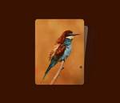

Bram.us
フィード

Scroll-driven animated card stack with scroll snap events
Bram.us
Dissecting and reworking a very nice demo by Paul Noble.
12日前

CSSNestedDeclarations is coming to all browsers to improve CSS Nesting!
Bram.us
CSS nesting just got a whole lot better!
16日前
Feature detect Style Queries Support in CSS
Bram.us
Awaiting browser support for at-rule(), here’s how you do it.
18日前
Benchmarking the performance of CSS @property
Bram.us
With @property now being Baseline Newly Available, I thought it’d be a good time benchmark the impact – if any – it has on the performance of your CSS. When starting to use a new CSS feature it’s important to understand its impact on the performance of your websites, whether positive or negative. With @property … Continue reading "Benchmarking the performance of CSS @property"
21日前
Solved by CSS Scroll-Driven Animations: hide a header when scrolling down, show it again when scrolling up.
Bram.us
By adding a long transition-delay to a CSS property under certain conditions (which you can do using a Style Query), you can persist its value.
1ヶ月前
The CSS Podcast 089: View Transitions
Bram.us
Last week I joined my colleagues Adam and Una on The CSS Podcast to talk about View Transitions.
1ヶ月前
Observing Style Changes (2024.09.25 @ devs.gent)
Bram.us
Slides of the talk “Observing Style Changes” I gave at the September 2024 meetup of devs.gent at the Lemon Ghent offices.
1ヶ月前
Feature detecting Scroll-Driven Animations with @supports: you want to check for animation-range too
Bram.us
You want to filter out Firefox’s partial implementation …
1ヶ月前
A better capturing mode for View Transitions
Bram.us
What if View Transitions animated the clip-path, border-radius, opacity, … properties for you by default? And what if it preserved the hierarchy of the tree?
1ヶ月前
Animate to height: auto; (and other intrinsic sizing keywords) in CSS
Bram.us
Use the interpolate-size property or the calc-size() function to enable smooth transitions and animations from lengths to intrinsic sizing keywords and back.
1ヶ月前